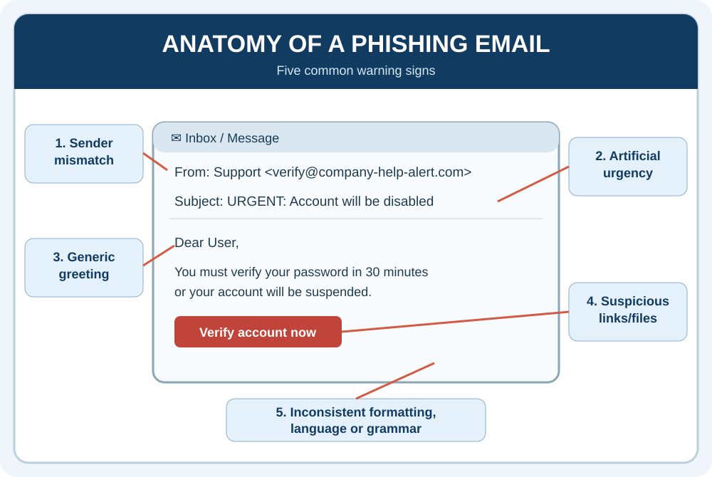

Purpose
Learning outcomes
By the end of the session, interns should be able to:
- Distinguish and categorise organisational data types (Personal, Sensitive, Proprietary, Public).
- Explain why access permissions, least privilege, and security controls matter.
- Recognise and report social engineering and phishing threat vectors.
- Apply safe digital practices to links, attachments, public Wi-Fi, and data sharing.
- Respond immediately and appropriately when a security incident or leak is suspected.
Imagine you accidentally send a confidential company document to the wrong person. What should you do first?
Data Classification, Privacy & Free Service Risks
Data is information that can be collected, stored, processed or shared. Companies are strict about their data because poor data protection can cause financial loss, fraud, privacy violations, reputational damage, legal or regulatory consequences, and loss of customer trust. Mismanagement may also lead to regulatory fines under privacy laws such as GDPR and POPIA.
The table below demonstrates data classification and responsible AI use in the workplace:
| Data Classification | Examples | Can this Data Be Uploaded or Shared with AI? |
|---|---|---|
| Public Data | Published press releases, public marketing materials, published blog posts, publicly available reports and website content. | Generally yes. Check that the information is genuinely public and that copyright, licensing or other usage restrictions permit sharing. |
| Internal Data | Internal organisational charts, newsletters, staff training materials, internal procedures and non-public meeting notes. | Only in an organisation-approved AI tool when permitted by policy. Confirm that the tool is authorised and confidential business details will not be exposed. |
| Confidential / Sensitive Business Data | Financial reports, product roadmaps, business plans, trade secrets, unpublished research, acquisition plans and confidential contracts. | Do not upload to general-purpose or unapproved AI tools. Obtain explicit authorisation and ensure appropriate security, confidentiality and contractual protections. |
| Personally Identifiable Information (PII) | Names linked to personal records, ID or passport numbers, home addresses, phone numbers, email addresses and customer records. | Avoid uploading identifiable information. Use an approved AI environment only for an authorised purpose and where privacy requirements are met. Remove or anonymise personal details wherever possible. |
| Restricted Data | Banking details, passwords, authentication tokens, encryption keys, payment card data, medical records, sensitive employee records and salary spreadsheets. | Do not upload without explicit authorisation for the particular data and use case. Passwords and authentication tokens should never be entered into AI prompts. |
| Legally Privileged / Regulated Data | Confidential legal advice, litigation documents, protected client information, regulated financial records and documents subject to contractual or statutory restrictions. | Do not upload to unapproved AI tools. Obtain legal, compliance or data-owner approval; even approved tools may not be authorised for every regulated data type. |
| Third-Party / Proprietary Data | Client deliverables, supplier contracts, licensed datasets, partner information and documents received under a non-disclosure agreement (NDA). | Only where the data owner, contract terms and organisational policy permit it. Check whether external AI processing is allowed and minimise identifying details. |
Workplace examples
The examples below can help you apply the classifications to everyday workplace tasks.
Improving a public announcement
An intern asks AI to improve the wording of a press release that has already been published.
Why: The information is public and can generally be used for editing or communication support.
Summarising an internal meeting
An intern uploads internal meeting notes to generate a summary and action list.
Why: The notes may contain internal decisions, staff information or confidential plans. Check permissions and use an approved tool.
Analysing employee salaries
An intern uploads a spreadsheet containing employee names, salaries and bank details to ask AI to identify trends.
Why: The file contains personal and restricted information. Use an authorised analysis environment and, where possible, de-identify and minimise the data.
Analysing sales performance
An intern wants AI to identify trends in quarterly sales, but the original report contains client names and confidential deal details.
Why: Create an approved, minimised dataset with aggregated figures and no unnecessary identifiers, then confirm it is authorised for the chosen tool.
The intern's data rule
If you don't need to share it, don't share it.
If you're unsure, ask.
Activity — What Data Is This?
Instructions: Classify each item according to how it should generally be treated in the workplace.
| Data / Information | Public | Personal | Sensitive | Confidential |
|---|---|---|---|---|
| 1. Name | ||||
| 2. Home address | ||||
| 3. Password | ||||
| 4. Company strategy document | ||||
| 5. Client database | ||||
| 6. Public company phone number | ||||
| 7. Medical information | ||||
| 8. Bank details |
Phishing, Social Engineering & Incident Response
Social engineering uses human error, trust or pressure to compromise organisational security.
- Spear Phishing: Highly targeted emails impersonating managers or vendors, requesting urgent transfers or credentials.
- Social Engineering: Exploits trust, urgency, fear, authority or helpfulness.
- Red Flags: Sender mismatch, artificial urgency, generic greetings, suspicious links, unexpected attachments or requests to bypass normal processes.
- Public Wi-Fi Risks: Public networks can expose data to interception. Use your organisation's approved enterprise VPN and lock your screen (Win+L / Cmd+Ctrl+Q) when stepping away.
Immediate Incident Response
Early reporting limits harm. If you click a suspicious link, expose information or lose a device, follow the approved security process immediately:
Anatomy of a Phishing Email
The infographic below demonstrates common warning signs, including sender-address mismatch, generic greetings, malicious links or attachments, and inconsistent formatting.

Activity — Spot the Phish
Instructions: Read each workplace message below. For each one, identify whether it is Safe or Suspicious, the red flag(s) you notice, and what you should do if you receive it.
Scenario 1 — Account Warning
From: IT Support <it-support@company-securehelp.com>
Subject: URGENT: Your account will be disabled today
Your account has been flagged for suspicious activity. You must verify your password immediately by clicking the link below. Failure to do so within 30 minutes will result in your account being disabled.
Scenario 2 — Urgent Payment
From: Your Manager
Subject: Urgent payment
Hi, I am in a meeting and need you to urgently purchase gift cards for a client. Please send me the codes as soon as possible. Don't call me as I can't take calls right now.
Scenario 3 — Unexpected Attachment
From: A colleague you regularly work with
Subject: Meeting notes
Hi, Please find the meeting notes attached. These are the notes from today's team meeting. Thanks.
You were not expecting an attachment and the colleague has not mentioned sending you a document.
Scenario 4 — Public Wi-Fi
You are working from a coffee shop and need to access your company systems. You connect to a network called “Free_Coffee_WiFi” without checking whether it is the official network.
A. Your computer will automatically be damaged.
B. Your data could potentially be intercepted on an insecure network.
C. Your company account will automatically be deleted.
D. There is no risk if the Wi-Fi has a password.
Scenario 5 — Incident Response
You accidentally click a suspicious link in an email and realise afterwards that it may have been a phishing attempt. What should you do first?
A. Ignore it if nothing immediately appears to happen.
B. Delete the email and continue working.
C. Stop further exposure, preserve relevant information and immediately contact the approved security channel.
D. Forward the email to your colleagues to warn them.
Checklist
- I am able to distinguish and categorise organisational data types (Personal, Sensitive, Proprietary, Public).
- I can explain why access permissions, least privilege, and security controls matter.
- I can recognise and report social engineering and phishing threat vectors.
- I am able to apply safe digital practices to links, attachments, public Wi-Fi, and data sharing.
- I am able to respond immediately and appropriately when a security incident or leak is suspected.
Reflection
What is one cybersecurity or strong data hygiene habit you will make automatic in your daily routine to protect company data during your internship?
Assigned Resources
Additional Resources
References
Return to the Module 3 session menu or continue when the next session is available.